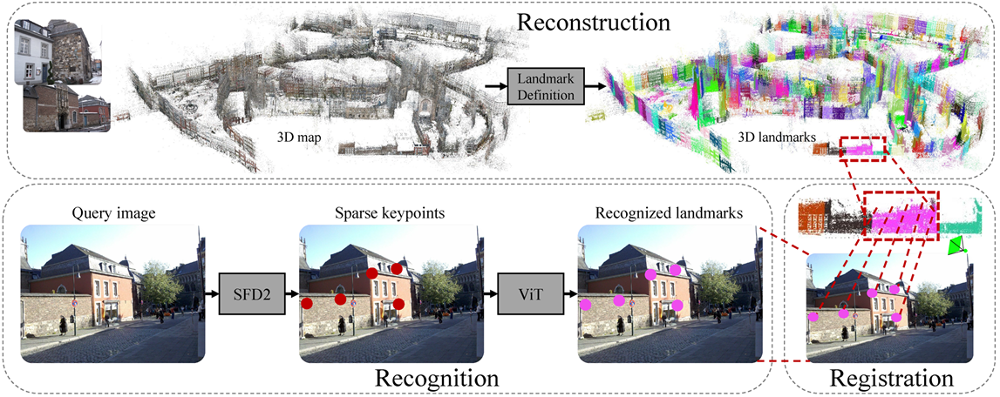
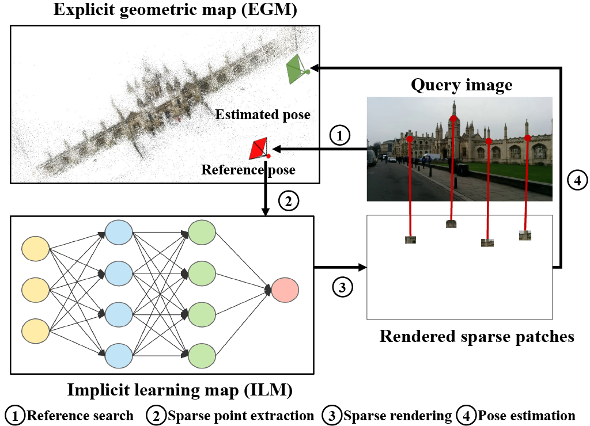
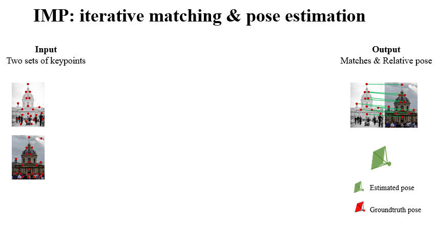
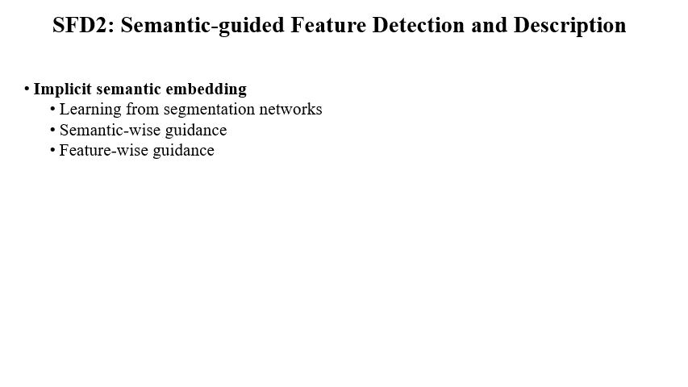

|
I am a PhD student in the Computer Vision Group at the University of Cambridge, supervised by Prof. Roberto Cipolla and Dr. Ignas Budvytis. My research interests lie in large-scale 3D reconstruction and localization for autonomous driving, robotics, and AR/VR. I am especially interested in efficient and accurate pose estimation by introducing multimodality signas, semantics, and geometric constraints. Prior to my PhD, I obtained the Bachelor and Master degrees from Peking University under the supervision of Prof. Hongbin Zha . As a student, I have been fortunate to be an intern at UiSee, SenseTime, and NVIDIA. |

|
News
- 2024.04 Release of PRAM and VRS-NeRF !
- 2023.05 Two papers are accepted by CVPR 2023!
- 2022.05 One paper is accepted by CVPR 2021!
- 2021.10 One paper is accepted by TPAMI 2022!
- 2020.05 Two papers are accepted by CVPR 2020!
- 2020.05 Two papers are accepted by ICCV 2019!
- 2019.05 One paper is accepted by CVPR 2019 as oral!
- 2018.06 Two papers are accepted by ACCV 2018!
Academic Activities
- Conference reviewer of: CVPR, ICCV, ECCV, NeurIPS, ICML, ICLR.
- Journal reviewer of: TPAMI, PR.
Research ( Google Scholar )
|  |
Fei Xue, Ignas Budvytis, Roberto Cipolla Arxiv 2024 Paper / Code / Project We propose Place Recognition Anywhere Model (PRAM) for efficient large-scale localization which automatically defines landmarks in any scenes and recognizes these landmarks for both coarse and fine localization. Previous works of semantic-aware features SFD2 and geometric-aware matcher IMP are used. |
|  |
Fei Xue, Ignas Budvytis, Daniel Olmeda Reino, Roberto Cipolla Arxiv 2024 Code A NeRF-based localization pipeline with sparse rendering for high efficiency. Previous works semantic-aware features SFD2 and geometric-aware matcher IMP are used. |
|  |
Fei Xue, Ignas Budvytis, Roberto Cipolla CVPR 2023 Paper / Code / Video / Slides / Poster We mebed geometric constraint into graph-based matcher (e.g. SuperGlue) to make it work more accurate and robust in challenging conditions (e.g. large viewpoint changes, repetitve textures). Attention scores are used to remove useless keypoints progressively to achieve higher effciency. |
|  |
Fei Xue, Ignas Budvytis, Roberto Cipolla CVPR 2023 Paper / Code / Video / Slides / Poster Semantics are very useful for local feature detection and description especially for long-term tasks. However, explicit usage of semantics requires segmentation networks and has severe semantic uncertainties. In this paper, we implicitly embed semantics into detection and description to detect robust keypoints and extract semantically-augmented descriptors. |

|
Fei Xue, Ignas Budvytis, Daniel Olmeda Reino, Roberto Cipolla CVPR 2022 Paper / Code / Video / Slides / Poster Our first trial on large-scale localization by recognition. We define global instances on building facades which are discriminative for coarse localization and robust to appearance changes. At test time, we recognize these global instances and use them for city-scale localization. |

|
Fei Xue, Xin Wang, Junqiu Wang, Hongbin Zha TPAMI 2022 Paper / Code / An end-to-end VO system with tracking, remembering and refining components. It works impressively well in autonomous driving and robotics scrnarios. |
|
|
Fei Xue, Ignas Budvytis, Daniel Olmeda Reino, Roberto Cipolla CVPR 2022 Paper / Code / Video / Slides / Poster Our first trial on large-scale localization by recognition. We define global instances on building facades which are discriminative for coarse localization and robust to appearance changes. At test time, we recognize these global instances and use them for city-scale localization. |

|
Fei Xue, Xin Wu, Shaojun Cai, Junqiu Wang CVPR 2020 Paper / Code An end-to-end localization frameowrk which formulates multi-view inputs as a graph and leverages GNN for multi-view information fusion. It works very well in scenarios where a single-view input leads to errors due to similar structures etc. |

|
Shunkai Li, Xin Wang, Yingdian Cao Fei Xue, Zike Yan, Hongbin Zha CVPR 2020 (oral) Paper / Code An end-to-end VO framework with online adaptation at test time to enhance its ability of working in more general environments. |

|
Fei Xue, Xin Wang, Zike Yan, Qiuyuan Wang, Junqiu Wang, Hongbin Zha ICCV 2019 Paper / Code |

|
Shunkai Li, Fei Xue, Zike Yan, Xin Wang, Zike Yan, Hongbin Zha ICCV 2019 Paper / Code |

|
Fei Xue, Xin Wang, Shunkai Li, Qiuyuan Wang, Junqiu Wang, Hongbin Zha CVPR 2019 (oral) Paper / Code |

|
Fei Xue, Qiuyuan Wang, Xin Wang, Wei Dong, Junqiu Wang, Hongbin Zha ACCV 2019 Paper / Code |

|
Xin Wang, Fei Xue, Qiuyuan Wang, Xin Wang, Wei Dong, Junqiu Wang, Hongbin Zha ACCV 2019 Paper / Code |


{kind=link}
{kind=link}